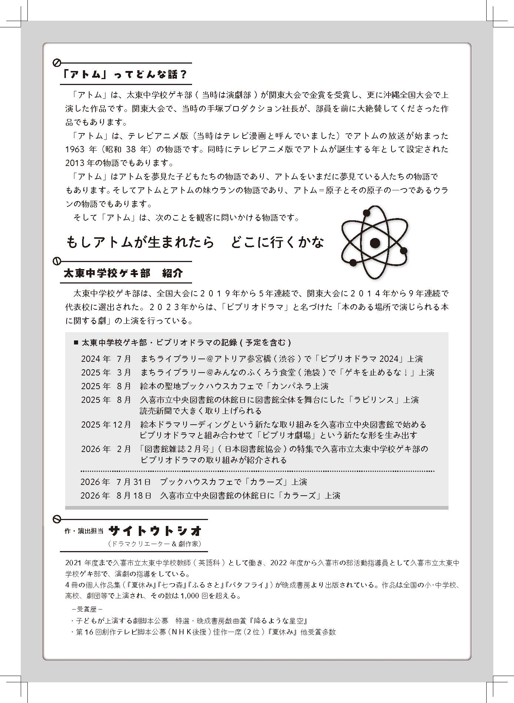

全国大会上演作品
関東大会で金賞を受賞し、沖縄全国大会で上演された、太東中学校ゲキ部の代表作の一つです。
もしアトムが生まれたら、
どこにいくかな。
『鉄腕アトム』という物語を手がかりに、未来を夢見た子どもたちと、いまも未来を夢見る人たちへ届ける、問いかけの物語です。
久喜市立太東中学校ゲキ部 自主公演作品
『アトム』は、太東中学校ゲキ部が関東大会で金賞を受賞し、さらに沖縄で開催された全国大会で上演した作品です。
物語の手がかりとなるのは、テレビアニメ『鉄腕アトム』の放送が始まった1963年。そして、アニメの中でアトムが誕生すると設定された2013年。
アトムを夢見た子どもたち。いまも未来を夢見る人たち。この作品は、時代を越えて受け継がれてきた「未来への憧れ」を描きます。
「もしアトムが生まれたら、
どこにいくかな。」
関東大会で金賞を受賞し、沖縄全国大会で上演された、太東中学校ゲキ部の代表作の一つです。
大会作品として生まれた『アトム』を、本のある場所で上演する作品として新たに届けています。
アトムを知る世代にも、初めて出会う世代にも、「未来を夢見ること」を問いかけます。
